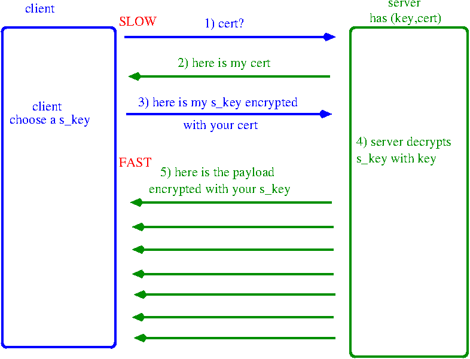

Strong cryptography
- Cryptographic strength measured by:
- Time and Resources it would require to recover the plaintext.
- Strong: is not possible to decipher
- before the end of the universe
- with all the planet computers
"There are two kinds of cryptography in this world: cryptography that will stop your
kid sister from reading your files, and cryptography that will stop major governments
from reading your files. This book is about the latter."
Bruce Schneier, Applied Cryptography: Protocols, Algorithms, and Source Code in C
Cryptography can be strong or weak, as explained above. Cryptographic strength is measured in the time and resources it would require to recover the plaintext. The result of strong cryptography is ciphertext that is very difficult to decipher without possession of the appropriate decoding tool. How difficult? Given all of today's computing power and available time—even a billion computers doing a billion checks a second—it is not possible to decipher the result of strong cryptography before the end of the universe.
Cryptography can be strong or weak, as explained above. Cryptographic strength is measured in the time and resources it would require to recover the plaintext. The result of strong cryptography is ciphertext that is very difficult to decipher without possession of the appropriate decoding tool. How difficult? Given all of today's computing power and available time—even a billion computers doing a billion checks a second—it is not possible to decipher the result of strong cryptography before the end of the universe.
But more than Cryptography strength
- the strength of the cryptographic algorithm
- the secrecy of the key
The security of encrypted data is
entirely dependent on two things: the strength of the cryptographic algorithm and the
secrecy of the key.
Two types of cryptography
- Conventional cryptography
- Public key cryptography
Conventional cryptography: Names
- conventional cryptography
- secret-key encryption
- symmetric-key encryption
Conventional cryptography: Picture
Conventional cryptography: Origin and Examples
- Caesar's cipher (OLD!)
- Data Encryption Standard (DES)
Conventional cryptography: example: Caesar's cipher
Starting withABCDEFGHIJKLMNOPQRSTUVWXYZand sliding everything up by 3, you get
DEFGHIJKLMNOPQRSTUVWXYZABCwhere D=A, E=B, F=C, and so on.
Using this scheme, the plaintext, 'SECRET' encrypts as 'VHFUHW'.
key is 3
Conventional cryptography: Pros/Cons
- Pros: It is very fast.
- Cons: Problem: key distribution
the persistent problem with conventional encryption is key distribution: how do you get the key to the recipient without someone
intercepting it?
Public key cryptography
- The problems of key distribution:
- solved by public key cryptography
Public key cryptography: Origin
- Concept introduced by Whitfield Diffie and Martin Hellman (1975).
- British Secret Service: J H Ellis: few years before (1970)
Public key cryptography: 2 sides, duality
- Encryption: sender encrypts with recipient pub key
- Signature: sender signs with his private key
Public key cryptography: Encryption: Schema
Public key cryptography: Signature: Schema

Uses of digital signatures
- Authentication
- Integrity (better than hash)
- Non-repudiation
Public key cryptography: Examples
- Elgamal (named for its inventor, Taher Elgamal),
- RSA (named for its inventors Rivest, Shamir, and Adleman),
- Diffie-Hellman
- DSA, the Digital Signature Algorithm, (invented by David Kravitz, for signature).
Public key cryptography: Pros/Cons
- Cons:
- 1000(!?) times slower than conventional
- limit on size(!)
- Pros: no key issue
Note: Hash functions
- The young man and the old camel > Hash=Sum of bytes
- The young camel and the old man > Hash=Sum of bytes
- cryptographic strength
A trivial example of a hash function is to add all of the byte values of a message together, and take the sum
modulus a maximum number say, 1024. It is not possible to reconstruct the original input stream from this
sum. Another property of a hash algorithm is its cryptographic strength, or the ability for attackers to craft
input designed to produce a given hash value.
SSL/TLS: Combining the two!
SOLUTION: Public key AND Conventional cryptography
- distribute the key with Public key cryptography
- distribute the content with Conventional cryptography
SSL/TLS: names
- key: private key
- cert: public key
SSL/TLS: protocol idea, simple
SSL/TLS: problem: man-in-the-middle

SSL/TLS: CA: solution to man-in-the-middle
- Signature and CA
- PKI
SSL/TLS: CA: signature

SSL/TLS: CA: CRL
- CERT Revocation list
- http://crl.cacert.org/revoke.crl
- DigiNotar
- SSL: Secure Socket Layer (Sockets is TCP/IP API)
- TLS: Transaction Layer Security (IETF standard SSL)
- Pros:
- Easy to implement and use
- Deployed in most browsers, servers
- Cons:
- Protects only if used by appl.
- Vulnerable to Clogging (DOS)
- TCP only (no UDP)
- Headers exposed
- Pros:
- easy, independent
- awareness of semantics
- Cons:
- Change each app, computer...
- Internet (network) Layer
- hard, wasteful, error-prone,
- must trust all computers
- No protection for headers
- S/Key (login)
- Payment protocols, e.g. SET (credit card payments)
- Tools: XML security, Kerberos, ...
- Secure E-mail (S/MIME,PGP,...)
- Pros:
- Protect all applications, data (IP header, addresses)
- No change to applications
- Gateway can protect many hosts
- Anti-clogging mechanisms
- Implemented by operating systems, Routers, ...
- Standard
- Cons:
- Implementation,
- interoperability, availability
- Application awareness/control is difficult
- stunnel: impas, https, etc..
- X.509
- DER(Distinguished Encoding Rules) binary
- PEM (Privacy Enhanced Mail) ascii base64 encode
- PKCS#12 file (.pfx or .p12) archive
- openssl
- library + command line
- (keytool)
- Question: How old is conventional cryptography?
- Question: How old is Public key cryptography?
- Question: What is the difference between encryption and signature?
- Question: Is PEM binary or ASCII?
- Question: Is RSA a public key or conventional algorithm?
- Question: Is DES a public key or conventional algorithm?
- Question: Is SSL/TLS using public key or conventional cryptography?
- Question: At what level in the TCP/IP stack is SSL/TLS
- Question: Can SSL/TLS be used over UDP?
- Question: Can SSL/TLS be used to secure other protocols than HTTP?
SSL/TLS: names
SSL/TLS: where in the stack?
SSL/TLS: network layers pic

SSL/TLS: Pros/Cons
SSL/TLS: Alternative 1: Add to Each Application

Alternative 1: Pros/Cons
Alternative 1: Examples
Alternative 2: IP Security

Alternative 2: Pros/Cons
SSL/TLS: Easy: Proxy
SSL/TLS: Key and Cert formats
SSL/TLS: Swiss Army Knife
SSL/TLS: LABS
SSL/TLS: LAB 1: encryption
# Conventionnal encryption: # Encrypt a file using triple DES in CBC mode with password on command line openssl enc -des3 -e -k mypassword -in file.txt -out file.des3 openssl enc -des3 -d -k mypassword -in file.des3 -out file_dec.txt # Public key encryption: # generate the private key: openssl genrsa -out private.pem 1024 # generate the publick key: openssl rsa -in private.pem -out public.pem -outform PEM -pubout # encrypt: # -pubin: the input file is an RSA public key. # -certin: the input is a certificate containing an RSA public key. openssl rsautl -encrypt -inkey public.pem -in file_small.txt -out file_small.ssl -pubin openssl rsautl -decrypt -inkey private.pem -in file_small.ssl -out file_small_dec.txt # M: max number of bytes # which can be encrypted with a particular key size with the following: # M=((KeySize - 384) / 8) + 37
SSL/TLS: LAB 2: Client SSL 1
# Create the CA Key and Certificate for signing Client Certs openssl genrsa -des3 -out ca.key 4096 openssl req -new -x509 -days 365 -key ca.key -out ca.crt -subj '/CN=Alex CA' # Create the Server Key, CSR, and Certificate openssl genrsa -des3 -out server.key 1024 (or openssl genrsa -out server.key 1024) openssl req -new -key server.key -out server.csr -subj '/CN=server1.foo' # We're self signing our own server cert here. This is a no-no in production. openssl x509 -req -days 365 -in server.csr -CA ca.crt -CAkey ca.key -set_serial 01 -out server.crt # Create the Client Key and CSR openssl genrsa -des3 -out client.key 1024 openssl req -new -key client.key -out client.csr -subj '/CN=alfresco-system' # Sign the client certificate with our CA cert. Unlike signing our own server cert, this is what we want to do. openssl x509 -req -days 365 -in client.csr -CA ca.crt -CAkey ca.key -set_serial 02 -out client.crt
SSL/TLS: LAB 2: Client SSL 2
encryption, signature (authentication X2)# check the subject of the cert openssl x509 -subject -issuer -noout -in ca.crt openssl x509 -subject -issuer -noout -in client.crt openssl x509 -subject -issuer -noout -in server.crt # or more details openssl x509 -text -noout -in ca.crt openssl x509 -text -noout -in client.crt openssl x509 -text -noout -in server.crt
SSL/TLS: LAB 2: Client SSL 3
# package the client private and public keys in a P12 (openssl pkcs12 -export -out client.p12 -in client.crt -inkey client.key -chain) # requires the CA cert in standard location openssl pkcs12 -export -out client.p12 -in client.crt -inkey client.key -certfile ca.crt # print some info (check CA is included) openssl pkcs12 -info -in client.p12 -nodes openssl pkcs12 -info -in client.p12 -nokeys
SSL/TLS: LAB 2: Client SSL 4
# in firefox https://server1.foo:443/index.html This Connection is Untrusted The certificate is not trusted because the issuer certificate is not trusted. # http://www.cyberciti.biz/faq/firefox-adding-trusted-ca/ # advanced->encryption openssl s_client -CAfile ssl/compute/ca/ca.crt -connect server1.foo:443 openssl s_server -cert server.crt -key server.key -www https://server1.foo:4433/ http://forums.mozillazine.org/viewtopic.php?f=38&t=372781 If you dont know your master password paste this in your address bar of firefox: chrome://pippki/content/resetpassword.xul and click Reset button. Next time you will be prompt for a new master password for Firefox! (Error code: sec_error_reused_issuer_and_serial)
SSL/TLS: LAB 2: Client SSL 5
<VirtualHost server1.foo:443>
DocumentRoot "/var/www/SSL"
ServerName "server1.foo"
SSLEngine on
CustomLog logs/ssl_request_log "%t %h %{SSL_PROTOCOL}x %{SSL_CIPHER}x %{SSL_CLIENT_S_DN_CN}x \"%r\" %b"
SSLCipherSuite HIGH:MEDIUM
SSLProtocol all -SSLv2
SSLCertificateFile /home/madon/ssl/compute/ca/server.crt
SSLCertificateKeyFile /home/madon/ssl/compute/ca/server.key
SSLCertificateChainFile /home/madon/ssl/compute/ca/ca.crt
SSLCACertificateFile /home/madon/ssl/compute/ca/ca.crt
<Location "/">
SSLRequireSSL
Options All
Order allow,deny
Allow from all
</Location>
# http://httpd.apache.org/docs/2.0/ssl/ssl_howto.html#certauthenticate
SSLVerifyClient none
<Directory /var/www/SSL/Certneeded>
SSLVerifyClient require
SSLVerifyDepth 5
SSLCACertificateFile /home/madon/ssl/compute/ca/ca.crt
SSLOptions +FakeBasicAuth
SSLRequireSSL
SSLRequire %{SSL_CLIENT_S_DN_CN} eq "alfresco-system"
</Directory>
</VirtualHost>